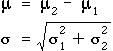
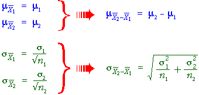

Distribution of difference between sample means
In the previous section, we saw that the difference between two independent quantities X1 and X2 has a distribution with mean and standard deviation

We can apply this to obtain the distribution of the difference between the means of two random samples.

Shape of the distribution
In general therefore,
| Irrespective of the distributions within the two
groups, |
Simulation: Manipulative skills of job applicants
The diagram below models an experiment in which a sample of male college students and a sample of experienced female industrial workers were asked to perform a manipulative task involving insertion of pins into a board. The number of pins inserted in one minute was recorded from each subject.
(The means and standard deviations are those obtained from an actual experiment that was described earlier.)
Click Accumulate then take several samples. Observe that the empirical distribution of the difference between the means matches the theoretical pink normal distribution.